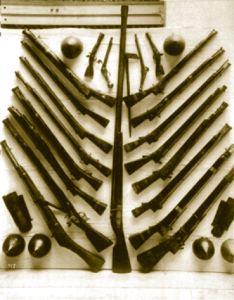

SARAYIN PLANI
Yüzyıllarca gelişen ve büyüyen Topkapı Sarayı’nın planının belirlenmesinde Osmanlı Devleti felsefesi ile tebaa ilişkilerinin büyük rolü olmuştur. Fatih’in babası Sultan II. Murad’ın Tunca Nehri kenarında yaptırdığı ve günümüzde sadece az bir kalıntısı kalan Edirne Sarayı’nın ihtişamlı olduğu ve Topkapı’nın ilk inşa edildiği dönemde bu sarayın planından etkilenildiği bilinir. Sarayın planı; çeşitli avlular ve bahçeler arasında devlet işlerine ayrılmış daireler, hükümdarın ikametgâhı olacak bina ve köşkler ile sarayda yaşayan görevlilere mahsus binalardan müteşekkildir. Yapılar, geniş bir alana serpiştirilmiş şekildedir.
Fatih devrinden, terk edilmeye başlandığı 18. yüzyıl sonuna kadar, inşa edilen bölümleri içinde sarayın genel planına aykırı bölümler olduğu gibi, Matbah-ı amire (Mutfaklar) gibi zarif mütevazı kısımlar, bir evrensel imparatorluğun yükseldiği Kubbealtı; IV. Murad’ın trajik, dağdağalı ama zarif iç dünyasını aksettiren Revan ve Bağdat Köşkleri, çinileriyle ebedileşen Veliaht Dairesi, tarihimizin en ilginç olaylarının geçtiği Harem’deki Altınyol gibi enfes bölümleri de vardır. Saray, kendine özgü planı ile bugün Doğu ve Batı’daki saraylardan farklılık arz eder.
Topkapı Sarayı’nın etrafı karadan “Sur-ı Sultani” dediğimiz duvarlarla, deniz tarafından ise Bizans surlarıyla çevrelenmiştir. Bu geniş saha, yaklaşık 700 bin metre karedir. Topkapı’nın birinci avlusuna “Bâb-ı Hümâyûn / Emperyal Kapı” denen kapıdan girilir. Lale Devri’nin sembol eserlerinden III. Ahmed Çeşmesi’nin yanı başında bulunan bu kapı, diğer kapılara nazaran biraz daha sadedir.
Bâbü’s selam (gişelerin bulunduğu kapı), devletin yönetildiği bölüme açılır. Buradan içeriye atla sadece padişah geçebilir. Üçüncü kapı olan; Bâbü’s saade’den de saray kısmına geçilir. Harem burada bulunur. Topkapı’nın Harem’i padişahın evidir. Harem sadece harem değildir, o da bu dünyanın bir parçasıdır; her şeyden evvel bir okuldur.
Topkapı’nın 19. asra ait ilk evi Sultan Abdülmecid tarafından yaptırılan Mecidiye Kasrı’dır. Deryayı seyretmeye doyamayan padişahın zarif bir eseridir. Böyle bir seyir mekân da Sultan Selim Camii yanındaki meşrutadır ve padişah türbesini de burada vasiyet etmiştir.
Sarayın Kapladığı Alan
Sarayın kapladığı alan yaklaşık 700.000 metrekaredir. Bu alanın yine yaklaşık 80.000 metrekaresini binalar kaplamaktadır. Geri kalan mühim kısım ise hasbahçelere ayrılmıştır. Osmanlı zevkinin ve inceliğinin birer timsali olan, çiçeklerle ve özellikle de lalelerle donatılan bu bahçeler üç kıtada yayılan bir dünya imparatorluğunu türlü gaileler içinde yöneten Osmanlı padişahlarının zihnen dinlenmelerini ve kendilerini yenilemelerini sağlamıştır. Bugün de sarayın bahçesi sünbüllerden zanbaklara; güllerden menekşelere aynı güzellikleri taşımaya devam etmektedir.
Üzerinde durulacak bir konu da Topkapı Sarayı’nın zenginliğinden ve ihtişamından çok kendine has karakteri, çizgileri ve ananeleridir. Zaten Topkapı Sarayı, Osmanlı tarihini bir anane, bir baba ocağı gibi kaplamıştır. Padişahlar burada oturmasalar da ölüm hâlinde naaş burada tekfin edilir ve şehzadelerin sünnetleri burada yapılırdı. Topkapı Sarayı somutlaşmış bir anane bütünüdür ve buradaki hayat bilmemiz gereken bir tarih çizgisidir. Ayrıca Osmanlı devlet anlayışı bu sarayın her bölümünde ve her köşesinde göze çarpmaktadır.
Topkapı Sarayı her şeye rağmen Osmanlı medeniyetini bütün görkem ve ihtişamıyla bize anlatır.

Saint İrene Kilisesi’nin müze olarak kullanıldığı dönemde sergilenen Osmanlı ateşli silahları